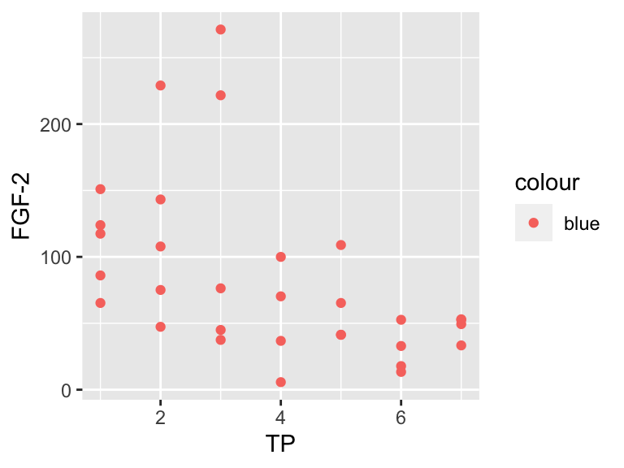
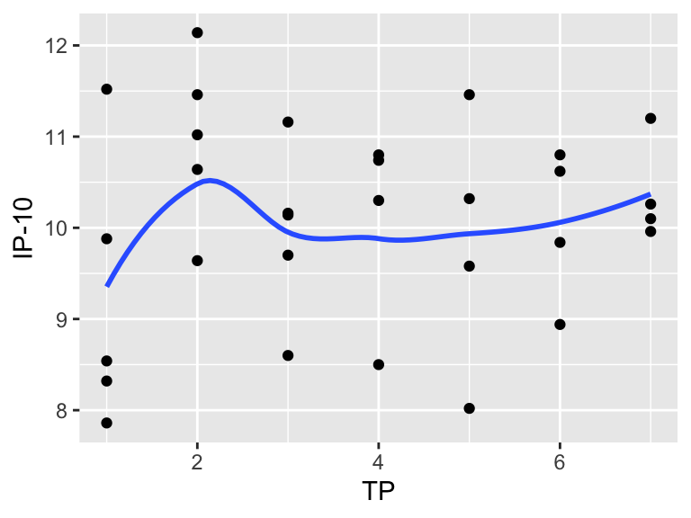

Session 2: Continuing with ggplot2
Mar 5, 2021
Agenda
- Style your ggplot with labels, themes, and colors
- Export your plot with
ggsave() - Transform your data set from wide to long format using
pivot_longer() - Split your plot into subplots, using
facet_grid()orfacet_wrap() - Customize your plot by layering geoms
Cheatsheets
Resources
Most of what we cover today will be based off of Chapter 3 in the R4DS textbook: https://r4ds.had.co.nz/data-visualisation.html
Here are third-party packages that you may find fun to test out on your own ggplots (some we mentioned during the session, others we did not):
ggthemesfor new themes + color paletteswesandersoncolor palettesRcolorBrewerfor palettesLaCroixColoRcolor palettes- This package is on Github only for now (not CRAN), so it has to be installed with the code below before you can load and use it:
install.packages("devtools") devtools::install_github("johannesbjork/LaCroixColoR")
Giraffe Homework
There will be two sets of homework exercises this week; one part will be the exercises listed below, the other will be the materials in the Intro to the Normal Distribution module on the website Teacups, Giraffes, and Statistics.
Work through the module and finish the coding exercises presented in the interactive windows. You should however complete the coding aspects of the module in RStudio on your local machine instead of on the site, so that you can save what you do. To run the examples locally, you will need a data file containing the giraffe heights, found here:
Download Giraffe_heights.csvExercises
The rest of the exercises for this week are below. I suggest that you create a new R script to work through the answers. You should save your Exercises script in your RStudio Project for this workshop.
You’ll first need to read in the data the way that we showed during Session 1, and call it cyto_data.
Run
ggplot(data = cyto_data, mapping = aes(x = TP, y = CD40L)). What do you see? (Make sure you have loaded all the packages that you need!)Make a scatterplot of time (
TP) vs the cytokineFGF-2.Recreate the R code necessary to generate the following graph:
Building on the scatterplot you made in #2, make the data points vary in size based on the values of the variable
RANTES(i.e., map the aesthetic propertysizeto the variableRANTES). Then, one at a time, mapcolorandshapetoRANTES. Finally, mapsize,color, andshapeto the variable for monkey ID. How do these aesthetics behavior differently for continuous vs. categorical variables?What’s gone wrong with this code? Why are the points not blue?
ggplot(data = cyto_data, mapping = aes(x = TP, y = `FGF-2`, color = "blue" )) + geom_point()
What happens if you map multiple aesthetics to the same variable?
What happens if you map an aesthetic to something other than a variable name, like
aes(color = TP < 4)? Note, you’ll also need to specify x and y.Fix the code below to make it run:
ggplot(data = cyto_data) + geom_point(mapping = aes(x = MIG, y = BLC)Do your best to recreate the plot below.

Now, can you use the
FantasticFox1palette from thewesandersonpackage to create the plot below?
Save the ggplot from the last exercise as a square plot under the filename
plot1.jpginside of your RStudio project.What plots does the following code make? What does
.do?ggplot(data = cyto_data) + geom_point(mapping = aes(x = TP, y = `FGF-2`)) + facet_grid(Monkey ~ .) ggplot(data = mpg) + geom_point(mapping = aes(x = TP, y = `FGF-2`)) + facet_grid(. ~ Monkey)Read
?facet_wrap. What doesnrowdo? What doesncoldo? Why doesn’tfacet_grid()havenrowandncolarguments?Recreate the R code necessary to generate the following graphs.

